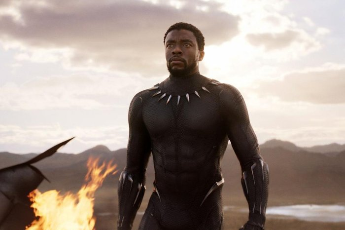

Pantera Negra: O Legado de Wakanda Inspira Gerações e Transforma a Narrativa Cinematográfica
O filme "Pantera Negra" continua a ser um marco cultural e cinematográfico, transcendendo as telas para se tornar um símbolo de empoderamento, representação e impacto social. Desde o seu lançamento, em 2018, a produção dirigida por Ryan Coogler cativou o público e redefiniu o papel dos super-heróis no cinema contemporâneo.
O filme introduziu o reino fictício de Wakanda, uma nação africana tecnologicamente avançada, governada pelo rei T'Challa, também conhecido como Pantera Negra. A interpretação icônica de Chadwick Boseman no papel principal elevou a representação negra em Hollywood e inspirou pessoas de todas as idades e origens.
Além de sua história cativante, "Pantera Negra" abordou questões de identidade, justiça social e responsabilidade, ganhando destaque por sua mensagem poderosa e relevância na cultura contemporânea. A riqueza cultural e a representação autêntica foram elementos essenciais para o sucesso do filme, que quebrou barreiras e estereótipos.
O impacto de "Pantera Negra" transcendeu as bilheterias e influenciou debates sobre diversidade e inclusão em Hollywood e na sociedade em geral. O filme inspirou discussões sobre a importância da representação de minorias étnicas e culturais em produções cinematográficas, incentivando a indústria a repensar suas narrativas e elencos.
Além disso, "Pantera Negra" abriu portas para a exploração de temas mais profundos dentro do gênero de super-heróis, desafiando as convenções tradicionais e provando que filmes desse tipo podem ser veículos para mensagens sociais significativas.
Com o triste falecimento de Chadwick Boseman em 2020, o legado de "Pantera Negra" ganhou um significado ainda mais profundo. O ator, que personificou a dignidade e a força do herói titular, deixou uma marca indelével na cultura popular e continuou a inspirar gerações após sua partida.
À medida que a sequência de "Pantera Negra" se aproxima, a expectativa e o entusiasmo permanecem altos, demonstrando o impacto duradouro que o filme teve na cultura cinematográfica e na sociedade como um todo.
"Pantera Negra" não é apenas um filme; é um movimento, uma celebração da cultura negra e um exemplo poderoso do que o cinema pode realizar quando se esforça para representar a diversidade e a complexidade do mundo em que vivemos. Seu legado continuará a inspirar e influenciar as gerações futuras, consolidando-se como um marco na história do cinema.